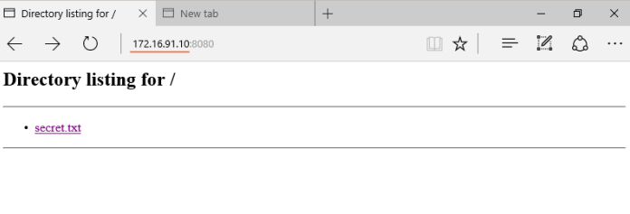
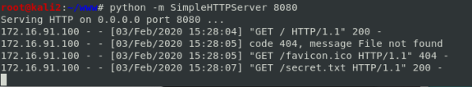
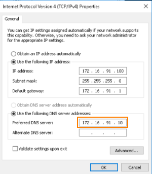
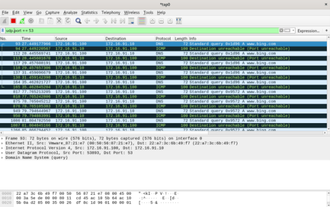

check browser GUI from the Target
start server
(Attacker)root@kali:/# cd /var/www/
root@kali:/# touch secret.txt
root@kali:/# python -m SimpleHTTPServer 8080
TCP ports(http)
(Target)
Open a web browser from the target and go to http://[your_ip_address]:[port] where “your_ip_address” is the IP of the attacking machine(kali linux)
Because in the folder(/var/www/) of the kali linux machine we don't have an index.html file, then all files and directories are listed
In this case we can load the page 172.16.91.10:8080 so we can say that the port 8080 is
OPENAs long as the python HTTP server is running on the kali linux machine, the terminal of it will update the data that are loaded from the web browser of the Windows machine
UDP ports(DNS) (Target)
In normal network without a VirtualMachine(VM) we should be able to see the DNS packets without adjusting the DNS options of the Windows machine.
However, on VM environment there is an issue with sniffing DNS packets, because of that we have to change the DNS of the Windows machine to the attacking machine(VM)'s IP interface
In the real world to sniff DNS request with a VM we have to change the DNS server to an attacker-controlled domain (where we can log all DNS requests)
Such DNS requests captured means that the firewall allows DNS traffic outbound (port 53 UDP)